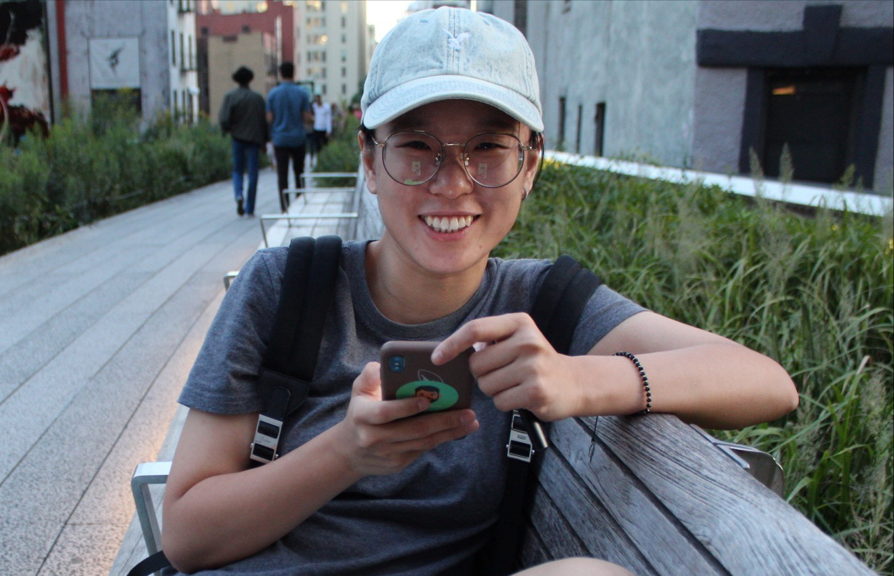
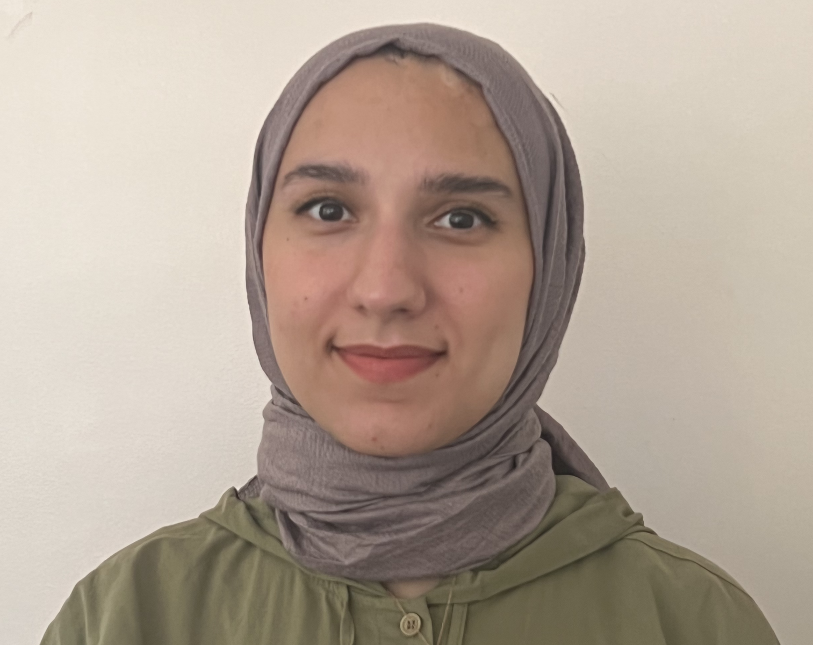

I am an associate professor at Queens College, CUNY in the Computer Science department. In our research lab, we are interested in medical imaging and AI implementations.
For our detailed research topic, you can visit our research link. We are working with our collaborations to solve clinical problems.
Prior to joining Queens College, --> where did you work, which school you graduated. professors you worked with, etc.
Our group, the Medical Imaging(??) Lab, is interested in weak supervision in medical imaging studies. We focus on diagnosis and segmentation of lesion areas. In addition, we also work on clinical longitudinal data on infant neurobehavioral and brain volumetric diseases.


Gozde Demirci
PhD Student
You know, I'm something of a Scientist myself. - Norman Osborn
[Google Scholar] [Papers] [Github]
- 01/2023 Gozde's poster is submitted in APS Observer.
- 05/2022 The poster about predicting infants' mental developmental delays using ML got accepted by Association for Psychological Science convention in Chicago.
- 05/2022 Gozde got accepted Google's CS Research Mentorship Program among one of the 150 students.